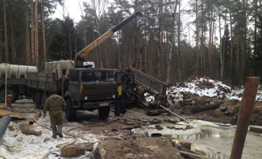

ГНБ - горизонтально направленное бурение
| Расценки на услуги ГНБ | ||
| Диаметр труб, мм | Стоимость прокладки за 1 м трубы, руб. | |
| 63 | от 1000 | |
| 110 | от 1600 | |
| 160 | от 1900 | |
| 225 | от 3400 | |
| 315 | от 4000 | |
| 400 | от 6000 | |
| 500 | от 9000 | |
| 630 | от 11000 | |
Цены указаны без учета стоимости материала. Окончательная стоимость работ зависит от длины, количества протягиваемых труб и особенностей объекта.
Уже многие годы горизонтально направленное бурение пользуется огромным успехом, в связи с уникальными возможностями, которые предлагаются этим методом бестраншейных технологий. Благодаря гнб сегодня выполняют самые ложные и ответственные работы, не прибегая к вскрытию грунтов, не нанося ущерба окружающей среде, экономя и время, и финансовые средства.
Не секрет, что в любом из крупных городов наблюдается острый дефицит земли. И поэтому использовать каждый ее свободный участок с толком и практично – главная задача застройщиков. Особые трудности поджидают строительные компании, которые занимаются прокладкой коммуникаций, так как на пути их трасс нередко возникают прочие коммуникации, водоемы, дороги и другие препятствия. Регулярно совершенствуемая технология гнб бурения позволяет с легкостью преодолевать все эти преграды.
Несмотря на все преимущества, стоимость горизонтально направленного бурения совсем невелика. Цены зависят, например, от характеристик земли, от числа протягиваемых в пучке одновременно труб, от длины и диаметра прокладываемого трубопровода. Экономическая целесообразность, так же, как и высокая эффективность гнб, доказаны на практике.
Отметить стоит также то, что гнб бурение предполагает использование не только новейшего оборудования и наиболее современной техники. Но также привлечения грамотных и образованных специалистов, которые имеют определенные знания и опыт в этой области. Только под их руководством в краткие сроки и без риска возникновения аварий можно выполнить необходимые виды работ. К слову, невзирая на кажущуюся трудность услуг, все они могут быть осуществлены без значительных людских ресурсов или задействования крупной техники.
В настоящее время горизонтально направленное бурение наиболее часто применяют при:
- Прокладке стальных футляров под железнодорожными полотнами и автомобильными трассами.
- Прокладке линий связи и электро-кабелей.
- Электромуфтовой и стыковой сварке полиэтиленовых труб.
- Санации различных типов трубопроводов.
- Монтажных работах с напорной канализацией и наружными сетями водопроводов.
- Строительстве и проведении специального ремонта сложных систем теплоснабжения.
- Возведении канализационных трубопроводов.
- Текущем и капитальном ремонте само сточных, ливневых, хозяйственно-бытовых канализаций.
- Строительстве и ремонте трубопроводов (теплопроводы, нефтепроводы, газопроводы, водопроводы и так далее).
- Ремонте и прокладке инженерных коммуникаций.
Наша компания предлагает вам осуществить горизонтально направленное бурение по максимально выгодной стоимости. В своей работе мы используем только лучшее оборудование, и гарантируем высокое качество оказываемых услуг.
Наши ГНБ установки
Мы используем установки горизонтально направленного бурения производства Vermeer, которые созданы для выполнения самых различных и сложных буровых работ. Их выделяет большая мощность и более широкий набор функций в сравнении с аналогичной техникой. У каждой из моделей имеются свои особенности и преимущества.
К примеру, ГНБ установка Vermeer D20 очень легка в управлении благодаря своим габаритным размерам. С ее помощью возможно бурить и проходить через скальные породы. Плюс – высокая производительность и улучшенный обзор.
Модель Vermeer D33 поставляется со штангами общей длиной 180 м. Она оснащена дизельным двигателем Cummins оптимальной мощности в 93 кВт.
Установка Vermeer D36 создана для работы в условиях самых тяжелых грунтов. Эту модель выделяет лучшее соотношение мощности и размеров. Двигатель агрегата способен обеспечить усилие продавливания и обратной протяжки 160 кН, крутящий момент составляет 6772 Нм.
ГНБ техника Vermeer D80 имеет мощнейший мотор в 203 лошадиных силы. Длина буровых штанг составляет 457 м. При помощи этой установки вы можете максимально быстро и качественно проложить трубопровод без разрушения ландшафта.

{kind=link}
{kind=link}
{kind=link}
{kind=link}
{kind=link}